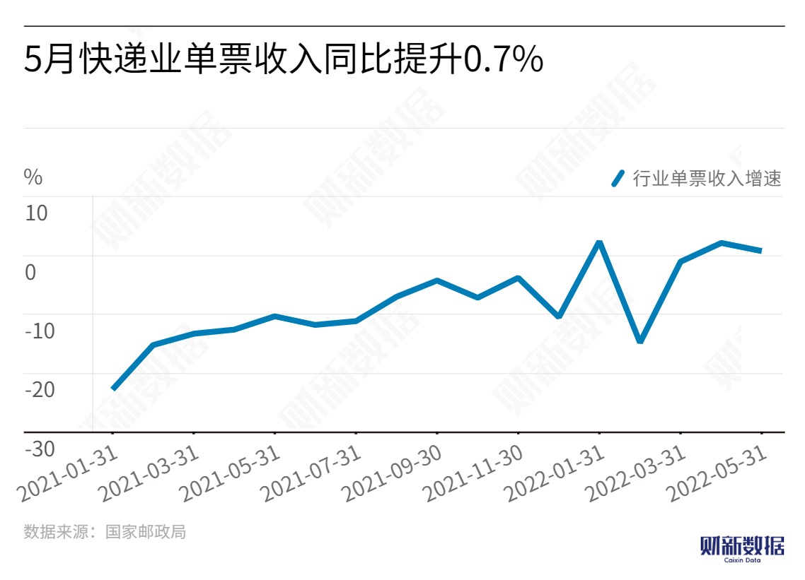

In May, the national express delivery volume significantly recovered, and the industry's market share continued to concentrate on leading companies. The operating costs of the industry have increased due to factors such as the pandemic and oil prices, and the unit price also remains at a high level. Despite regulatory easing of price wars, top-tier express delivery companies are still motivated to exchange volume for price.

According to data from the State Post Bureau, the national express delivery industry completed 9.24 billion parcels in May, an increase of more than 20% compared to the previous month, and an increase of 0.2% compared to the same period last year, which was also a significant improvement from April's -12%.
In terms of revenue, the average revenue per parcel in China's express delivery industry was about CNY 9.44 in May, up 0.7% year-on-year, but down 4.6% month-on-month, with prices remaining relatively stable. In specific regions, Guangdong saw a decrease of 0.25 yuan in average revenue per parcel, while Yiwu, as a benchmark for the price trend of economic e-commerce parcels nationwide, saw a decrease of 0.15 yuan in average revenue per parcel in May compared to April.
Kuang Peiqin divides the value restoration of the express delivery industry after the price war into three levels: policy control, price regression, and profit restoration. Currently, the industry's prices are gradually showing a benign trend of regression and are about to enter the level of profit restoration. The months of July and August after "618" are the off-season for the industry, and prices may fluctuate narrowly in the third quarter.
Yuan Shuai said with prices gradually returning to rationality, profit-making ability will become the core of competition among express delivery companies, leading to a shift from scale competition to service quality competition.